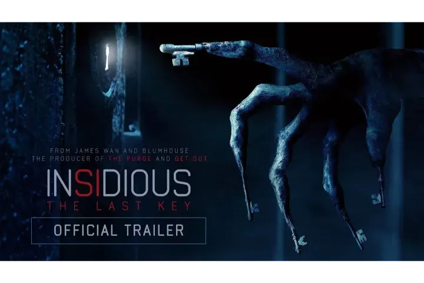

| Insidious: The Last Key | |
|---|---|
|  | |
| Film | Insidious: The Last Key |
| source cerita: | wikipedia |
| Tanggal rilis | 5 januari 2018 |
| Bahasa | Bahasa Inggris |
| Durasi | 103 menit |
Pada tahun 1953, Elise Rainier tinggal di Five Keys, New Mexico, bersama orang tuanya, Audrey dan Gerald, serta adik laki-lakinya, Christian. Elise dan Christian bertemu dengan hantu di kamar tidur mereka.
Karena ketakutan, Christian mencari peluit yang diberikan ibu mereka untuk meminta bantuan, tetapi tidak menemukannya. Gerald, yang sangat marah, mencambuk Elise dan menguncinya di ruang bawah tanah. Elise membuka pintu merah misterius dan secara singkat dirasuki oleh roh setan. Audrey dibunuh oleh iblis tersebut.
Puluhan tahun kemudian di California pada tahun 2010, Elise bekerja sebagai penyelidik paranormal bersama rekan-rekannya, Specs dan Tucker. Seorang pria bernama Ted Garza menelepon, mengatakan bahwa dia telah mengalami aktivitas paranormal di rumahnya.
Menyadari bahwa itu adalah rumah masa kecilnya, Elise pergi untuk membantunya. Saat menyelidiki, dia menemukan peluit Christian yang hilang, tetapi peluit itu menghilang lagi setelah dia bertemu dengan roh perempuan. Elise memberi tahu Specs dan Tucker bahwa dia pernah melihat arwah itu sebelumnya ketika dia masih kecil. Dia melarikan diri dari rumah karena takut akan pemukulan dari ayahnya, meninggalkan Christian.
Elise, Tucker, dan Specs bertemu dengan Melissa dan Imogen, anak perempuan Christian. Christian masih marah pada Elise karena telah meninggalkannya. Berharap dapat memperbaiki hubungan mereka, Elise memberikan foto peluit kepada Melissa dan menyuruhnya menunjukkannya kepada Christian. Elise dan Tucker menemukan lorong rahasia di ruang bawah tanah. Dipandu oleh roh wanita, mereka menemukan seorang wanita muda yang ditawan di dalamnya. Ted mengungkapkan bahwa dia bertanggung jawab. Dia mengunci kelompok itu dan mencoba membunuh Specs. Specs membunuh Ted untuk membela diri.
Setelah polisi mengamankan rumah tersebut, Christian dan putrinya masuk ke dalam untuk mencari peluit. Melissa diserang oleh iblis dari masa lalu Elise, yang dikenal sebagai Keyface. Keyface membuatnya koma dengan proyeksi astral yang kini terjebak di alam roh dari the Further.
Mencoba menyelamatkan Melissa, Elise menggeledah rumah dan menemukan koper tersembunyi yang berisi barang-barang milik banyak wanita lain yang telah ditawan, termasuk wanita muda yang pernah dilihatnya saat masih kecil. Elise menyadari bahwa seperti Ted, ayahnya, Gerald, juga pernah menculik wanita dan menahan mereka di ruang rahasia.
Wanita yang dilihatnya saat masih kecil, Anna, sebenarnya masih hidup, bukan hantu; dia kemudian dibunuh oleh Gerald. Di masa sekarang, Elise disergap oleh Keyface dan rohnya dibawa ke dunia lain.
Imogen, yang memiliki kemampuan seperti Elise, memasuki The Further dan dituntun oleh hantu Anna ke dalam dunia penjara di mana Keyface menahan semua jiwa yang telah diambilnya, termasuk Melissa dan Elise. Elise menyadari bahwa Keyface telah mengendalikan Gerald dan Ted dan memakan rasa takut dan kebencian yang ditimbulkan oleh para wanita yang mereka culik. Keyface mencoba memaksa Elise untuk menyakiti arwah ayahnya sebagai balas dendam atas apa yang telah dilakukannya. Elise mulai memukuli Gerald, tetapi dihentikan oleh Imogen dan menolak untuk memberi makan kebencian Keyface. Keyface menyerang Elise, tetapi Gerald menyelamatkannya sebelum dia ditusuk oleh Keyface, rohnya menghilang.
Keyface menikam Melissa, menyebabkan tubuh fisiknya mulai sekarat. Dia berusaha merasuki Elise. Elise meniup peluit Christian dan roh Audrey datang, mengalahkan Keyface. Mereka membuka sebuah pintu dan melihat seorang anak laki-laki, Dalton Lambert, . Menyadari bahwa mereka membuka pintu yang salah, mereka membiarkan pintu tersebut terbuka dan menemukan Melissa. Roh Melissa kembali ke tubuhnya di dunia nyata, menyelamatkan nyawanya. Elise menebus kesalahannya dengan arwah ibunya dan dia dan Imogen kembali ke dunia nyata dan bertemu kembali dengan Christian yang memaafkan Elise.
Dalam tidurnya, Elise bermimpi tentang Dalton dan Lipstick-Face Demon. Dia terbangun dan menerima telepon dari Lorraine. Elise telah menolong putranya beberapa tahun sebelumnya dan kini cucunya, Dalton, membutuhkan pertolongan yang sama, dan Elise setuju untuk memberikannya.